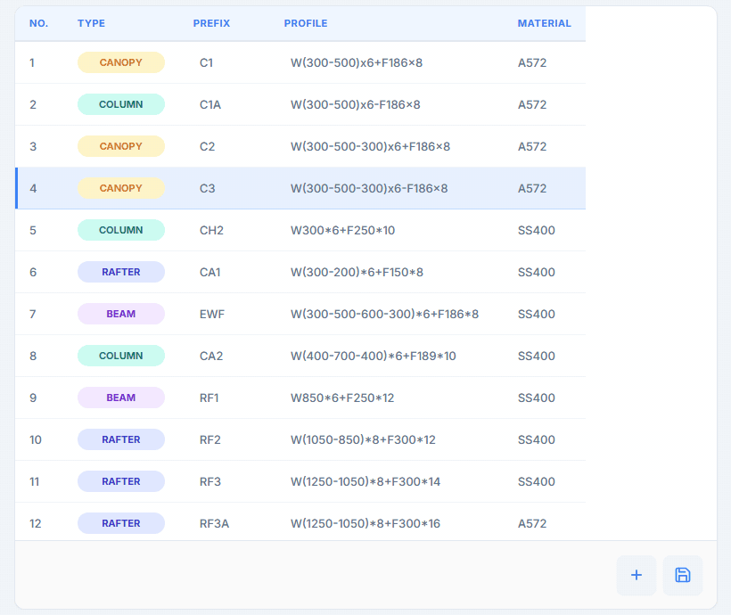
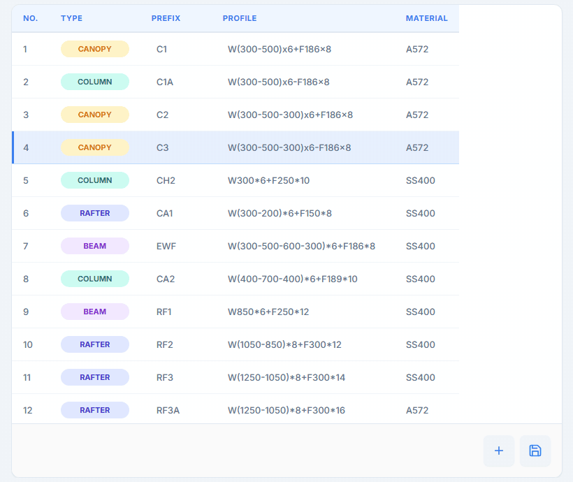

PEB Tools VN v1.3.29 — Thao tác chuẩn excel thông minh trong Peb Tools VN
Bản 1.3.29 (gồm cả các thay đổi của bản 1.3.28) phát hành ngày 04/10/2026 đưa các thao tác quen thuộc của Excel vào bảng PEB Member: copy, dán, di chuyển ô bằng phím mũi tên, kéo điền, hoàn tác, và cột Type tự gợi ý khi gõ.
Tóm tắt nhanh
- Ctrl+A / C / X / V chỉ tác động vào ô đang đứng.
- Chọn cả hàng (Shift, Ctrl hoặc kéo chuột), copy rồi dán vào một hay nhiều hàng.
- Di chuyển như Excel bằng mũi tên, Shift để chọn vùng, Ctrl+mũi tên để nhảy.
- Kéo điền: Prefix
C1kéo xuống thànhC2,C3… - Cột Type gợi ý tự điền khi gõ, nhấn Tab để chốt.
1. Ctrl+A, C, X, V chỉ tác động vào ô đang đứng
Khi con trỏ đang ở một ô, Ctrl+A chỉ chọn chữ trong ô đó thay vì quét cả bảng. Ctrl+C / Ctrl+X chép hoặc cắt giá trị của ô (hoặc phần chữ bạn bôi đen), Ctrl+V dán đúng vào ô đó. Bạn cũng có thể dán thẳng một vùng ô từ Excel vào bảng.
2. Chọn cả hàng, copy, dán sang hàng khác
Bấm vào số thứ tự của hàng để chọn cả hàng; bấm kèm Shift để chọn một dải hàng, kèm Ctrl để thêm hoặc bớt từng hàng, hoặc kéo chuột trên cột số thứ tự. Ctrl+C chép cả hàng (Type, Prefix, Profile). Chọn các hàng đích rồi Ctrl+V: chép 1 hàng và chọn nhiều hàng đích thì dán vào tất cả các hàng đó. Ô vừa copy có viền nét đứt cho tới khi bạn gõ vào ô hoặc nhấn Esc; Ctrl+Z hoàn tác lần dán.

3. Di chuyển như Excel
Bảng PEB Member nhận các phím tắt quen thuộc của Excel. Khi chuyển ô bằng bàn phím, chữ trong ô mới được bôi đen sẵn, gõ vào là thay luôn.
| Phím | Tác dụng |
|---|---|
| ↑ ↓ ← → | Sang ô kế bên (← → chỉ chuyển ô khi con trỏ đã ở mép chữ, nên vẫn sửa chữ trong ô bình thường) |
| Enter / Shift+Enter | Xuống / lên một ô |
| Shift + mũi tên | Mở rộng vùng chọn nhiều ô |
| Ctrl + mũi tên | Nhảy tới ô đầu/cuối của hàng hoặc cột |
| Ctrl+Home / Ctrl+End | Về ô đầu / ô cuối của bảng |
| Shift + click | Chọn hình chữ nhật từ ô đang đứng tới ô vừa bấm |
| Ctrl + click | Thêm hoặc bớt từng ô khỏi vùng chọn |
| Ctrl+C / Ctrl+X / Ctrl+V | Chép / cắt / dán ô hoặc cả hàng đang chọn |
| Ctrl+D / Ctrl+R | Điền xuống / điền sang phải |
| Delete / Backspace | Xoá nội dung ô hoặc các hàng đang chọn (hàng vẫn còn) |
| Ctrl+– | Xoá cả hàng đang chọn |
| Ctrl+Z | Hoàn tác (dán, điền, xoá…) |
| Esc | Huỷ chỉnh sửa ô và trả lại giá trị cũ; Esc lần hai bỏ vùng chọn |
4. Nắm kéo điền
Ô vuông nhỏ ở góc dưới-phải của ô đang chọn là nắm kéo điền. Kéo xuống để điền: ô Prefix có đuôi số sẽ tự tăng theo dãy (C1 → C2, C3…), các ô khác lặp lại giá trị nguồn. Ctrl+D điền xuống, Ctrl+R điền sang phải. Kéo điền chỉ điền trong các hàng đã có, không tự thêm hàng.

5. Cột Type gợi ý tự điền khi gõ
Cột Type không còn danh sách thả xuống. Khi bạn gõ, tool tự điền sẵn loại gần nhất (ví dụ gõ be thành Beam, phần điền thêm được bôi đen). Đồng ý thì nhấn Tab (hoặc Enter) là xong; muốn khác thì cứ gõ tiếp. Gợi ý lấy từ các loại có sẵn, các loại bạn đã nhập trước đó (được nhớ cho cả những lần mở sau) và các loại đang có trong bảng.
be trong cột Type, tool điền sẵn Beam, nhấn Tab để chốt.⚠️ Các thao tác trên áp dụng cho bảng PEB Member; bảng Base Plate giữ cách nhập cũ.
6. Gói cài đặt và cách nâng cấp
| Tekla Structures | Gói cài đặt |
|---|---|
| 2016, 2017, 2018, 2019, 2020 | Gói riêng cho từng năm |
| 2021 – 2026 | Gói 2021_Higher |
- Ở mục Tải về bên dưới, chọn phiên bản Tekla đang dùng để tải đúng gói
.tsep. - Nếu đã cài bản cũ, gỡ bản cũ trong Tekla Extension Manager trước.
- Nhấp đúp file
.tsep, tick phiên bản Tekla rồi bấm Import. Gói được cài khi Tekla khởi động lần tiếp theo.
PEB Tools VN v1.3.29 — Smart Excel-style editing in PEB Tools VN
Version 1.3.29 (including everything in 1.3.28), released on October 4, 2026, brings familiar Excel actions to the PEB Member table: copy, paste, arrow-key navigation, drag-fill, undo, and a Type column that suggests as you type.
At a glance
- Ctrl+A / C / X / V act on the current cell only.
- Select whole rows (Shift, Ctrl or drag), copy and paste into one or several rows.
- Move like Excel with the arrows, Shift to select a range, Ctrl+arrows to jump.
- Drag-fill: a Prefix of
C1dragged down becomesC2,C3… - The Type column suggests as you type, press Tab to accept.
1. Ctrl+A, C, X, V act on the current cell only
While the cursor is in a cell, Ctrl+A selects only the text in that cell instead of the whole table. Ctrl+C / Ctrl+X copy or cut the cell value (or the part you highlighted) and Ctrl+V pastes right into that cell. You can also paste a block of cells straight from Excel.
2. Select, copy and paste whole rows
Click a row's number to select the whole row; add Shift to select a range of rows, Ctrl to add or remove single rows, or drag over the number column. Ctrl+C copies the row (Type, Prefix, Profile). Select the target rows and press Ctrl+V: copy 1 row and select several target rows to paste it into all of them. A cell you just copied gets a dashed border until you type in a cell or press Esc, and Ctrl+Z undoes the paste.
3. Move around like Excel
The PEB Member table understands Excel's familiar shortcuts. When you change cell with the keyboard, the new cell's text is already highlighted, so typing replaces it.
| Key | Effect |
|---|---|
| ↑ ↓ ← → | Move to the neighbouring cell (← → only change cell when the cursor is at the edge of the text, so you can still edit text inside a cell) |
| Enter / Shift+Enter | Down / up one cell |
| Shift + arrow | Extend the selection over several cells |
| Ctrl + arrow | Jump to the first/last cell of the row or column |
| Ctrl+Home / Ctrl+End | Go to the first / last cell of the table |
| Shift + click | Select the rectangle from the current cell to the clicked cell |
| Ctrl + click | Add or remove single cells from the selection |
| Ctrl+C / Ctrl+X / Ctrl+V | Copy / cut / paste the cell or the selected rows |
| Ctrl+D / Ctrl+R | Fill down / fill right |
| Delete / Backspace | Clear the cell or the selected rows' contents (the rows stay) |
| Ctrl+– | Delete the selected rows |
| Ctrl+Z | Undo (paste, fill, clear…) |
| Esc | Cancel the edit and restore the old value; a second Esc clears the selection |
4. The fill handle
The small square at the bottom-right of the current cell is the fill handle. Drag it down to fill: a Prefix ending in a number counts up (C1 → C2, C3…), other cells repeat the source value. Ctrl+D fills down, Ctrl+R fills right. Drag-fill only fills existing rows; it does not add rows.
5. The Type column autocompletes as you type
The Type column no longer has a drop-down list. As you type, the tool fills in the closest match (for example be becomes Beam, with the added part highlighted). Press Tab (or Enter) to accept it, or keep typing for something else. Suggestions come from the built-in types, the types you entered before (remembered for later sessions) and the types currently in the table.
be in the Type column, the tool fills in Beam, press Tab to accept.⚠️ These actions apply to the PEB Member table; the Base Plate table keeps its old way of entering data.
6. Packages and how to upgrade
| Tekla Structures | Package |
|---|---|
| 2016, 2017, 2018, 2019, 2020 | One package per year |
| 2021 – 2026 | The 2021_Higher package |
- In the Download section below, select your Tekla version to get the matching
.tseppackage. - If an older version is installed, uninstall it in Tekla Extension Manager first.
- Double-click the
.tsepfile, tick your Tekla version and click Import. The package is installed the next time Tekla starts.
7. Tải về7. Download
Chọn phiên bản Tekla Structures bạn đang dùng — nút tải sẽ tự trỏ tới đúng gói cài đặt.
Select the Tekla Structures version you use — the download button points to the matching package.

Nhóm Zalo người dùng iViDLabiViDLab user group on Zalo
Quét mã QR hoặc bấm nút bên cạnh để vào nhóm: hỏi đáp khi sử dụng, báo lỗi và nhận thông báo bản cập nhật mới.
Scan the QR code or use the button to join the group: usage questions, bug reports and new release announcements.
Liên hệ iViDLabContact iViDLab
Theo dõi fanpage Facebook hoặc gửi email để được hỗ trợ và góp ý.
Follow the Facebook page or send an email for support and feedback.
Cảm ơn bạn đã dùng PEB Tools VN! Góp ý và báo lỗi cho bản 1.3.29 xin gửi qua email ividlab.com@gmail.com. Thanks for using PEB Tools VN! Please send feedback and bug reports for 1.3.29 to ividlab.com@gmail.com.